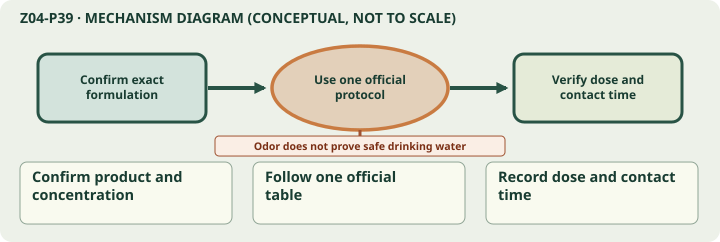

Z04-P39 · Water · New manuscript
Disinfect clear water with unscented household chlorine bleach
Apply label-verified household sodium hypochlorite accurately when boiling is unavailable and chemical hazards are excluded.
When it applies · Emergency drinking-water disinfection using fresh, regular unscented liquid bleach (5%–9% sodium hypochlorite) on chemically acceptable water.
Equipment · Fresh unscented 5%–9% liquid bleach with readable label, clean dropper or measuring spoon, pre-filter cloth, timer and clean lidded container.

Actions
- Confirm the bottle is plain unscented liquid bleach with 5%–9% sodium hypochlorite—never use scented, color-safe, splash-less or cleaner-added bleach.[W12]
- Clarify cloudy water first, measure the label-matched EPA/CDC dose (for 5%–9% bleach: about 8 drops or just under 1/8 tsp per gallon of clear water; double if still slightly cloudy), and mix thoroughly.[W12, W08]
- Let stand at least 30 minutes; water should have a faint chlorine odor (if not, repeat the dose and wait another 15 minutes), remembering chlorine does not reliably kill Cryptosporidium.[W12, W20]
Failure recognition · Using aged weak bleach, scented laundry bleach, or drinking immediately without the 30-minute contact wait.[W12, W05]
Verify · Confirm bleach label concentration, exact volume dosed, 30-minute timer completion and faint chlorine smell before drinking.[W12, ED]
Stop or change course · Reject bleach disinfection if chemical/fuel/algal contamination is suspected, if bleach concentration is unreadable or non-plain, or if Cryptosporidium risk requires boiling or cyst filtration.[W01, W12, W15, W20]
Evidence and editorial notes
- W01 · CDC · How to Make Water Safe in an Emergency (2024-09-19)
- Section: Water with fuel or toxic chemicals in it · Conditions: Suspected fuel, toxic chemicals or radioactive contamination
Support: Use a different safe supply. Standard boiling and microbial disinfection do not make this water safe.
Limitations: Does not list contaminant-specific lab remediation; applies to emergency consumer decisions only. · Conflicting evidence: None across CDC/EPA emergency guidance.
Editorial note: Used as upstream hard-stop gate prior to any field treatment card. · Specialist reviewer: Drinking-water safety and public health
Primary source · checked 2026-11-24 - W05 · CDC · How to Make Water Safe in an Emergency (2024-09-19)
- Section: Disinfect; Using light · Conditions: Matched product, concentration, dose, contact time and source condition
Support: Chemical disinfection is less dependable against some parasites. UV needs clear water and a correctly used device.
Limitations: Cold temperature and organic turbidity reduce chemical efficacy and UV penetration. · Conflicting evidence: None; exact manufacturer label governs dose and wait time.
Editorial note: Prohibits improvised chemical dosing when labels are absent. · Specialist reviewer: Drinking-water treatment specialist
Primary source · checked 2026-11-24 - W08 · CDC · How to Make Water Safe in an Emergency (2024-09-19)
- Section: Boil > Steps for boiling water > cloudy water · Conditions: Cloudy water with no identified chemical hazard
Support: Settling or cloth clarification only prepares water for treatment. Do not count it as disinfection.
Limitations: Removes coarse suspended solids only; dissolved toxins and microbes remain. · Conflicting evidence: Contradicts folklore claims that sand/cloth straining yields potable water; CDC governs.
Editorial note: Always depicted upstream of microbial treatment with an explicit barrier line. · Specialist reviewer: Drinking-water safety
Primary source · checked 2026-11-24 - W12 · US EPA · Emergency Disinfection of Drinking Water (current web edition)
- Section: Emergency Disinfection of Drinking Water > Bleach · Conditions: Emergency water when boiling is unavailable; unscented 5%–9% liquid household chlorine bleach
Support: Filter cloudy water first, verify unscented sodium hypochlorite concentration on the label, mix thoroughly, and wait at least 30 minutes before use.
Limitations: Ineffective against Cryptosporidium and chemical/fuel contaminants; bleach degrades with age and heat. · Conflicting evidence: EPA and CDC both note 8 drops (about 1/8 tsp) per gallon for clear water with 5%–9% bleach; exact concentration on current bottle governs.
Editorial note: Requires reading the bottle label rather than memorizing a single drop count for unknown concentrations. · Specialist reviewer: Drinking-water safety and public health
Primary source · checked 2026-11-24 - W15 · CDC · Harmful Algal Bloom (HAB)-Associated Illness (current web edition)
- Section: Harmful Algal Blooms > Drinking Water and Exposure · Conditions: Surface water with discolored scum, mats, foul odor, or active HAB advisory
Support: Avoid contact and do not drink water from suspected harmful algal blooms; boiling does not destroy cyanotoxins and can concentrate them as water evaporates.
Limitations: Cyanotoxins can persist in visually clear water after a bloom dissipates. · Conflicting evidence: Contradicts naive boil-everything advice; CDC/EPA HAB warnings explicitly prohibit boiling HAB water.
Editorial note: Establishes HABs as a chemical-toxin rejection trigger, not a microbial boil target. · Specialist reviewer: Environmental health and drinking-water safety
Primary source · checked 2026-11-24 - W20 · CDC · Preventing Cryptosporidium Infection (current web edition)
- Section: Preventing Cryptosporidium Infection > Water Treatment · Conditions: Surface water impacted by wildlife, livestock, or runoff
Support: Cryptosporidium oocysts are highly chlorine-tolerant; boiling or certified cyst-rated filtration (absolute <= 1 micron or NSF 53/55) is required rather than standard chlorine alone.
Limitations: Standard bleach or chlorine tablets at routine doses do not reliably inactivate Cryptosporidium. · Conflicting evidence: Clarifies gap left by single-barrier chlorine disinfection.
Editorial note: Core evidence for filter-plus-disinfect multi-barrier design in Z04. · Specialist reviewer: Drinking-water microbiology and public health
Primary source · checked 2026-11-24
Source lineage · EPA and CDC emergency disinfection guidance; new manuscript · Classification · New manuscript.